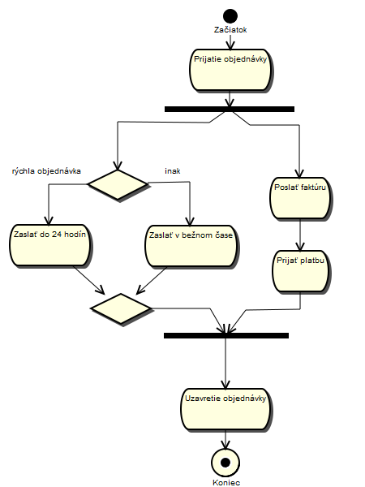

UML - Diagram aktivít (Activity Diagram)
Diagram aktivít popisuje správanie systému z hľadiska jeho pracovného toku (workflow). Tento diagram sa podobá stavovému diagramu, pretože
aktivity sú stavom vykonávania niečoho. Diagram popisuje stav aktivít zobrazovaním sekvencie aktivít vykonávaných v systéme. Tieto aktivity môžu byť
paralelné alebo podmienené. Diagram aktivít popisuje aké aktivity sa majú vyskytnúť a kedy sa majú vyskytnúť.
Diagram zobrazuje tok aktivít celým systémom. Číta sa zhora nadol a obsahuje vetvy a spojenia (hrubá vodorovná a zvyslá čiara) na zobrazenie a popis aktivít systému,
ktoré sa vyskytujú v rovnakom čase. Diagram aktivít musí mať začiatok a koniec. Aktivity (Activity - obdlžníky so zaoblenými rohmi) sú spojené medzi sebou tokom aktivít
(ActivityFlow - šípka od predchadzajúcej aktivity k nasledujúcej).
Príklad diagramu aktivít pre spracovanie objednávky:

Pre viac informácii odporúčam navštíviť iné zdroje, napríad Activity Diagram wiki